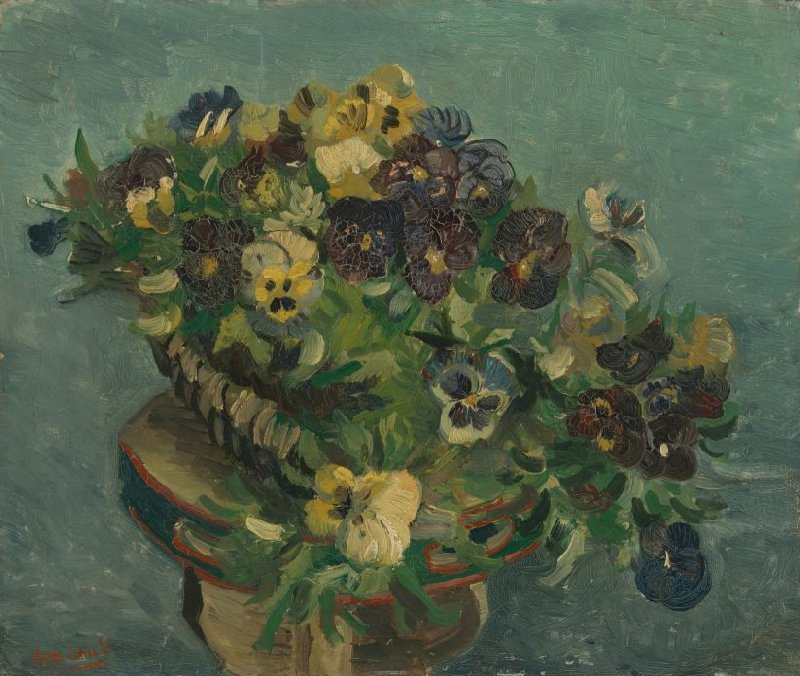

作品名 「パンジーのバスケット」
花言葉 「わたしを思って」「もの思い」「つつましい幸せ」
パンジー
「わたしを思って」
花名は花の模様が人の顔に似ており、花が前に傾いた様子が思索にふけるようにも見えることから、フランス語の「pensée（思想）」という言葉から付けられました。それが由来で「私を思って」や「もの思い」という花言葉がついたとされている。
パンジーのバスケット
フィンセント・ファン・ゴッホ
1886年、パリに住んでいたゴッホは、花の絵画を数多く制作していた。「パンジーのバスケット」もそのひとつである。ゴッホは、このような絵が買い手を惹きつけることを期待していたが、なかなか売れなかった。バスケットはタンバリンのような形の椅子の上に置かれている。パリのクリシー大通りにあるカフェ・ドゥ・タンブランには、このような椅子が置かれていた。ゴッホはそこの常連だった。イタリア人のオーナー、アゴスティーナ・セガトーリと数カ月間、交際していたこともあるそうだ。ゴッホが描いた彼女の肖像画にも、同じ椅子が描かれている。
| 作品名 | パンジーのバスケット |
| 作者 | フィンセント・ファン・ゴッホ |
| 制作年 | 1887年 |
| 種類 | キャンバス・油彩 |
| 寸法 | 46cm × 55cm |
| 所蔵 | ファン・ゴッホ美術館 |